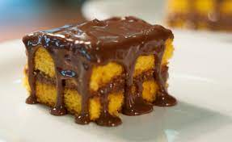

RECEITA BOLO DE CENORA DE MICROONDAS

INGREDIENTES PARA MASSA
- 3 cenouras médias
- 1 xícara de chá de óleo
- 2 xícaras de farinha de trigo
- 3 ovos
- 2 xícaras de açúcar
- 1 tampa de fermento para peneirar com o fermento
INGREDIENTES PARA COBERTURA
- Chocolate amargo em pó
- 1/2 colher de margarina
- 3 colheres de leite
- 2 colheres de açúcar
MODO DE PREPARO
- No liquidificador colocar os ovos, o óleo e as cenouras. bater por 3 minutos para sumir o cheiro dos ovos.
- Em uma vasilha a parte colocar os secos.
- Misturar os dois, mexer bem.
- Levar ao microondas por 10 minutos( em forma apropriada) enquanto isso fazer a calda.
- Levar tudo ao fogo e mexer sempre até que engrosse.
- Colocar em cima do bolo ainda quente.
- Se o bolo for feito na forma de silicone ele sai super fácil passando um pouco de óleo na forma e não quebra.